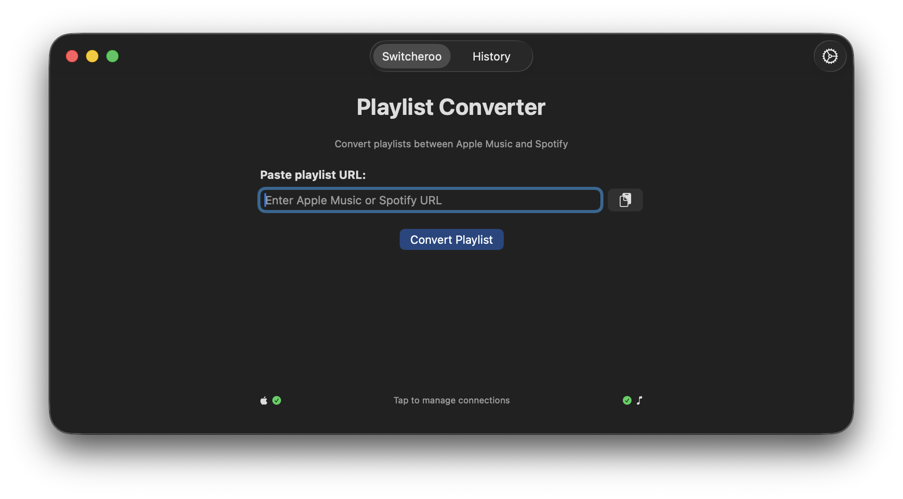

Switch playlists between
Apple Music & Spotify
Paste a playlist URL. Get the same playlist on the other service. That's it.
Apple Music → Spotify · Spotify → Apple Music

How it works
- Paste an Apple Music or Spotify playlist URL.
- The app detects the direction automatically.
- Tracks are matched and rebuilt on the other service — you get a link to the new playlist.